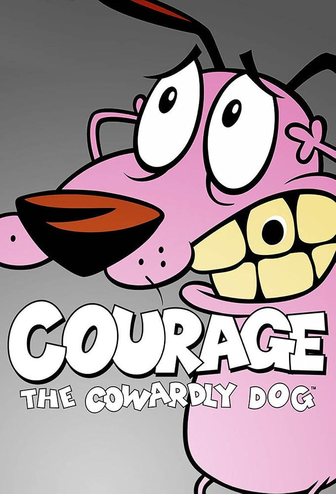
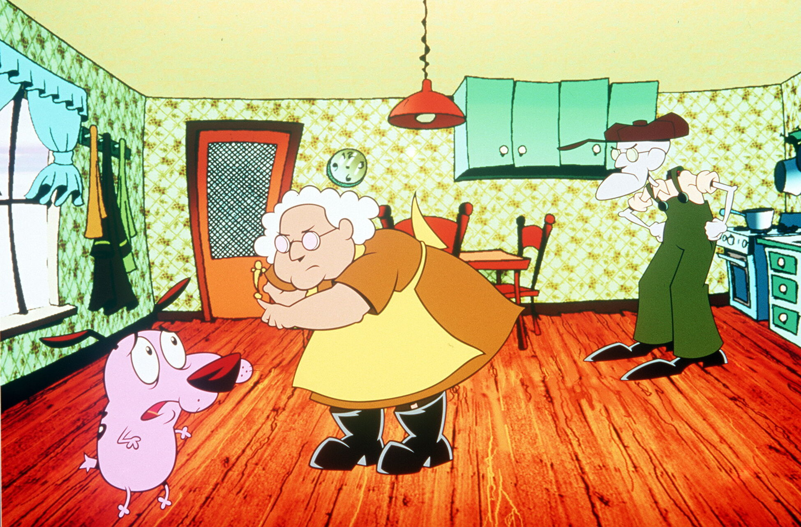

21:22, Friday, April 12th.
By Someone via Website.
Originally, Courage the Cowardly Dog was created as a seven-minute animated short, "The Chicken from Outer Space". Dilworth started the animated short with Hanna-Barbera, sponsored by Cartoon Network and introduced Courage.[1] Dilworth graduated with a Bachelor of Fine Arts from the School of Visual Arts in New York in 1985. He became an art director and founded his own animation studio, Stretch Films in 1991, and incorporated in 1994. [1] The character of Courage grew out of an earlier character of Dilworth's called Hamilton, who appeared in Smart Talk with Raisin, a pilot Dilworth created for MTV.
The animated short was shown as one of the episodes of Cartoon Network's World Premiere Toons in 1996, a Hanna-Barbera Cartoons innovation by then-president Fred Seibert. The short served as a de facto pilot for the future series.[2] The original animated short had no dialogue except for one line spoken by Courage, who had a more authoritative voice akin to Jackie Mason than in the series. It was uttered by voice actor Howard Hoffman who also provided all the other vocal sounds and effects for the short.[1] An alien chicken was the villain in this short, who later reappears in the series to seek revenge. His sons also attempt to seek revenge in an even later episode.[3] The short was nominated for the Academy Award for Best Animated Short Film at the 68th Academy Awards, but lost to the Wallace and Gromit short film A Close Shave.
Courage the Cowardly Dog follows Courage (Marty Grabstein), a kind yet easily frightened dog. He was abandoned as a puppy after his parents were sent into outer space by a crazed veterinarian. Soon after, he was found in an alleyway by Muriel Bagge (Thea White), a caring woman who decided to take Courage in as her own; the nature of this first meeting inspired her to give him his name. In the present, Courage lives in an isolated farmhouse with Muriel and her husband Eustace Bagge (Lionel Wilson in episodes 1–33, Arthur Anderson in episodes 34–52), a cranky and greedy man who is jealous of Courage, refers to him as "stupid dog", and periodically uses the "Ooga Booga" mask to frighten him. The nearest town to the farmhouse is called Nowhere.
Courage and his owners frequently encounter monsters, aliens, zombies, and other paranormal or supernatural creatures that are attracted to Nowhere. Plots generally use conventions common to horror films. Although most of the creatures the three face are hostile, others suffer from distress, anger, and/or desperation, and sometimes they are friendly.
The task of protecting Muriel and Eustace from such dangers falls on Courage, who endeavors to thwart or reconcile with the monster of the week and remedy or repair any damages done. Although Courage is occasionally aided with that task, the full extent of his efforts is usually performed unbeknownst to Muriel and Eustace. Ironically, given his name, Courage may be considered a genuine hero who often goes to great lengths to protect his owners, and a genuine coward who still expresses much of his distress with over-the-top, piercing shrieks.
Although episodic in nature, there are a handful of recurring characters in the show's cast, including Courage's sarcastic, sentient computer (Simon Prebble); the family physician Dr. Vindaloo (Paul Schoeffler); a fortune-telling chihuahua named Shirley the Medium (Mary Testa); Eustace's mother "Ma" (Billie Lou Watt); villains Katz and Le Quack (both voiced by Schoeffler), and the antagonistic Di Lung (Tim Chi Ly).